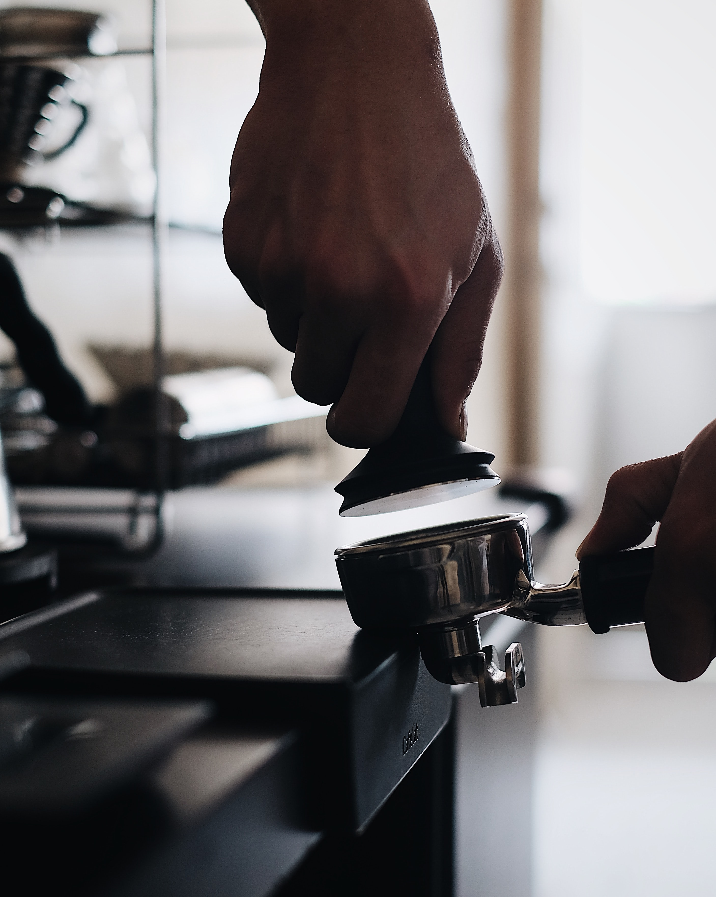

곡성 목공예커피체험관은,
바리스타시험을 볼 수 있는 바리스타 시험 검정장이며 월드커피바리스타협회와 함께합니다.
원두 감별
좋은 원두를 구입하기 위한 커피콩 고르는 법을 배우고 보관하는 방법등을 배우게 됩니다.
커피 추출
맛있는 커피를 내리는 방법을 꼼꼼히 배워 나만의 커피를 만드는 법을 배우게 됩니다.
라떼아트
에스프레소를 바탕으로 우유, 우유거품등으로 디자인 하는 법을 배우게 됩니다.
로스팅
커피의 향이 제대로 우러나올 수이 있도록 커피콩을 맛있게 볶는 방법을 배우게 됩니다.

핸드드립 이론 및 추출 과정을 실습하고, 여러 조건에 따라 달라지는 커피맛의 변화를 이해합니다. 원두 및 드리퍼를 선택하여 커피의 독특한 향미에 대해 깊이 있게 접근하고 여러가지 노하우를 배우며 자신만의 커피를 추출해봅니다.
- 담당강사: 김광수 관장
- 수업정원: 30명
- 소요기간: 3개월, 회차당 이론/실습 3시간
- 수강일정: 상담필수
- 수강금액: 상담필수
-
이런분들께 추천 드려요!
- 커피에 대한 지식이 있으나 더 수준있는 교육을 원하시는 분
- 카페 창업을 희망하시는 분
- 커피에 관심이 있고 실생활에 활용하기위해 전문교육을 원하시는 분
Advanced